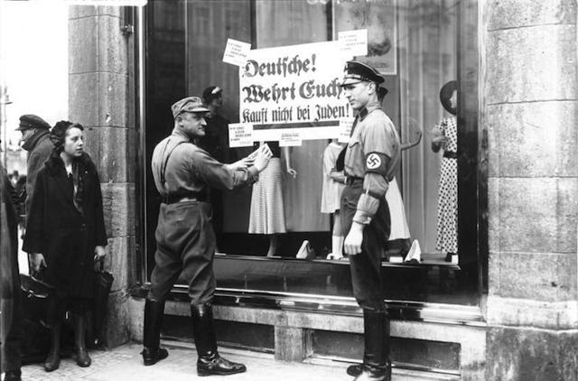

JUDARNA
Judarna var den folkgrupp som nazisterna ansåg vara icke-människor och saknade rätt att leva. Denna religiösa folkgrupp har varit förtryckta och förföljda under historiens gång. Det var inte ovanligt under århundradena att judarna beskylldes för olika tragedier som drabbade länder. Orsaken till varför tyskarna började förtrycka judarna såpass extremt under andra världskriget startade efter Versaillesfreden när judarna fick skulden för nederlaget. Sedan togs hatet till det extrema när nazisternas hatpropaganda fick följe och de tog makten. Judar har under historien inte haft rätt till att äga egen mark. Detta har gjort att många istället börjat jobba inom finans, handel eller politik för att överleva. Många judar blev framgångsrika och hade det bättre ställt än andra tyskar under första världskriget. Många butiker och fabriker var ägda av judar och många var politiker. Under Versaillesfreden kände sig många tyskar förrådda av de dåtida politikerna, vilket bestod av många judar. Folket sökte efter något att skylla på efter nederlaget och eländet, och syndabocken blev judarna. Nazister sätter upp en skylt på en judisk affär vilket uppmanar tyskar att inte handla där.
Hitler, som var soldat under första världskriget, hatade Tysklands nederlag och förnedring mer än någon annan. Han avskydde det politiska systemet och antisemitismen växte inombords. Med sina kraftfulla tal om Tysklands problem under 30-talet övertalade han många att ansluta sig till nazistpartiet. Läget blev bara sämre och sämre för judarna.